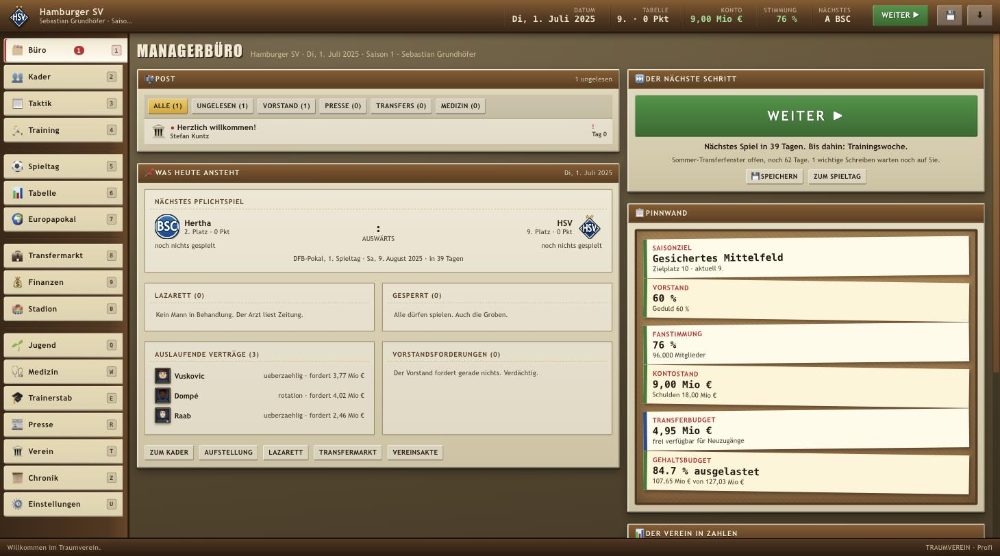

Zwei Vorbilder, ein Spiel
Am Anfang standen zwei Dinge, die eingefangen werden sollten: die ran-Fußball-Romantik und der Take der Anstoss-Reihe.
Also Samstagabend, Fanfare, Bauchbinde. Der Reporterton, der ein 0:0 in Uerdingen ernst nimmt. Das Gefühl, dass ein Spieltag ein Ereignis ist und kein Datensatz. Und dazu Anstoss' Blick auf den Beruf: Manager sein heißt Büro, Aktenschrank, Vorstand, Presse — die Elf ist nur eine von vielen Baustellen, und das Spiel nimmt sich dabei selbst nie ganz ernst.
Dazu kamen drei Bedingungen, die nie verhandelt wurden: kein Framework, keine Abhängigkeit, kein Build-Schritt. Was hier liegt, soll in zehn Jahren noch laufen, wenn ein Browser es öffnet.
